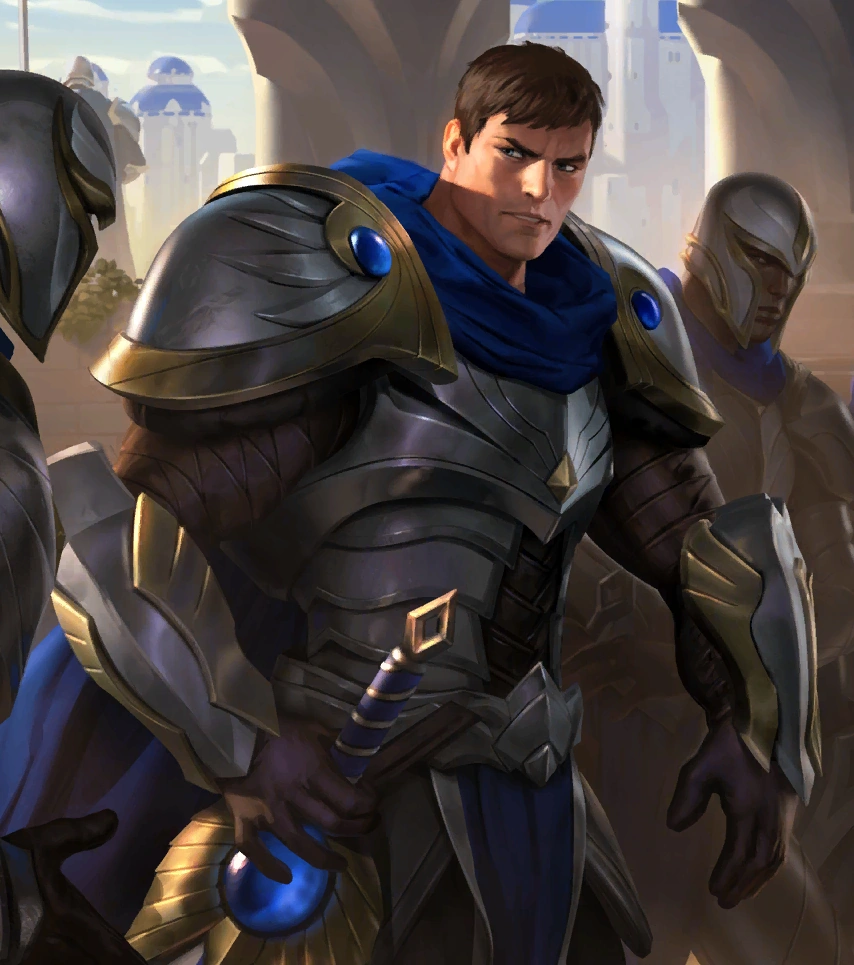
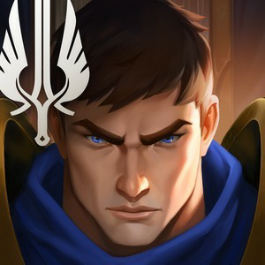
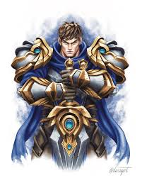

Conoce a Garen
Un soldado orgulloso y noble, Garen lidera la Vanguardia Intrépida. Es popular entre sus compañeros y goza del respeto de sus enemigos, sobre todo por ser descendiente de la prestigiosa familia Crownguard , encargada de defender Demacia y sus ideales. Ataviado con una armadura resistente a la magia y empuñando una poderosa espada ancha, Garen está listo para enfrentarse a magos y hechiceros en el campo de batalla, en un auténtico torbellino de acero justiciero.

Un ejemplo a seguir

Garen es un modelo de virtud y honor, siempre dispuesto a sacrificarse por el bienestar de su nación. Su lealtad inquebrantable a Demacia y su compromiso con la justicia lo convierten en un líder inspirador para sus compañeros y un adversario temible para sus enemigos.
Niñez y Juventud
Garen nació en la ciudad de Alto Silvermere, en el seno de la noble familia Crownguard. Desde temprana edad, mostró un fuerte sentido del deber y una pasión por proteger a los demás. Su infancia estuvo marcada por el entrenamiento riguroso y las expectativas de su linaje, lo que lo preparó para su futuro como defensor de Demacia.

Relaciones

Garen mantiene relaciones cercanas con sus compañeros de la Vanguardia Intrépida, especialmente con Lux, su hermana menor, y con Jarvan IV, el príncipe de Demacia. Su vínculo con Lux es especialmente fuerte, ya que ambos comparten un profundo amor por su familia y su nación. Además, Garen tiene una relación de respeto mutuo con otros campeones de Demacia, como Fiora y Xin Zhao.
carrucel
Fotos de garem
Habilidades de Combate
Clickea para ver detalles de cada una

Perseverancia
Regenera salud pasivamente.
Tiempo
Golpe Decisivo
Silencia y castiga.
Q
Coraje
Resistencia pura.
W
Juicio
Torbellino de acero.
E
Justicia
Ejecución divina.
R